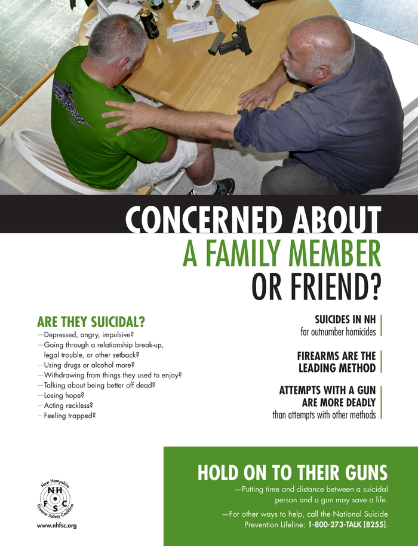

The call was from Elaine Frank, an injury prevention professional at Dartmouth College. The two decided that something needed to be done to prevent more similar tragedies. So, the two formed an “unlikely alliance,” as Demicco puts it, which showed that firearm advocates and suicide prevention advocates could agree to disagree on politics, but come together to do something about suicide prevention.
They also teamed up with Cathy Barber, director of the Means Matter program at the Harvard School of Public Health. The objective of Means Matter was to look at how, rather than why, people were taking their lives. And that “how” was often a firearm.
Two-thirds of gun deaths in the United States are not homicides, but suicides. And guns are the most accurate method of accomplishing suicide, with a 90% effectiveness rate. What’s more, a 2008 study showed that almost 50% of suicides are completed without planning – that is, the attempt is completed within ten minutes or less of deciding to carry out the act. So, taking away a firearm from a person in danger of acting instinctively seemed to be a logical step.
That unlikely alliance formed what came to be known as The Gun Shop Project, a volunteer scheme that gave gun shop owners more guidance on the subject of suicide. Those who decided to participate could post promotional posters in their shops, offer takeout cards printed with hotlines for those troubled, and were trained on how to look out for a potentially suicidal customer. In that eventuality, they would refuse to sell that customer a gun.

A promotional poster from the Gun Shop Project. These are hung in gun stores that want to participate in the program.
Since New Hampshire pioneered the project, other states around the country have formed their own versions, and tailor them to their specific populations. The Colorado Gun Shop Project, for example, mentions hunting a lot in the promotional materials, and prints pictures of elk on the posters. “We’re a Western state, with that pioneer, independent spirit,” said Emmy Betz, an associate professor of emergency medicine at the University of Colorado. “We have a bigger hunting culture than some states, and one of the highest suicide rates in the country.”
The Rocky Mountain region has high suicide rates generally. According to the CDC’s figures for 2016, Colorado has the ninth-highest rate, below other Rocky states like Wyoming, Montana and Idaho. And there seems to be a correlation between the high suicide rates and the proud “gun cultures” ingrained in these states.
But that gun culture brings along with it a skepticism, especially considering today’s heated national debate about guns. None of those states have a Gun Shop Project or a partnership of any kind with Means Matter. In Wyoming, many shops have allowed free gun locks to be disseminated, but that’s all for now. Rhianna Brand, a suicide survivor, is pushing for more collaboration with gun sellers in her state. “People get concerned – they’re gonna take our guns away, take away our customers,” she said.
But other gun-friendly states have partnered with Means Matter to create their own state-specific programs, even if not a full-fledged Gun Shop Projects. Washington started the Safe Homes Project, focusing on keeping guns safely stored in the home – and is the only state so far to get backing from the NRA. Utah has concentrated on a Firearm Instructor Module, developing PSAs about suicide as part of training at gun ranges.
And, in another case of strange bedfellows, the American Foundation for Suicide Prevention (AFSP) has teamed up with the National Shooting Sports Foundation (NSSF) to trial a collaboration in four states – Kentucky, Alabama, New Mexico and Missouri – to educate firearm owners and sellers about suicide prevention. The aim is to make this trial successful enough that it can be scaled up nationwide.